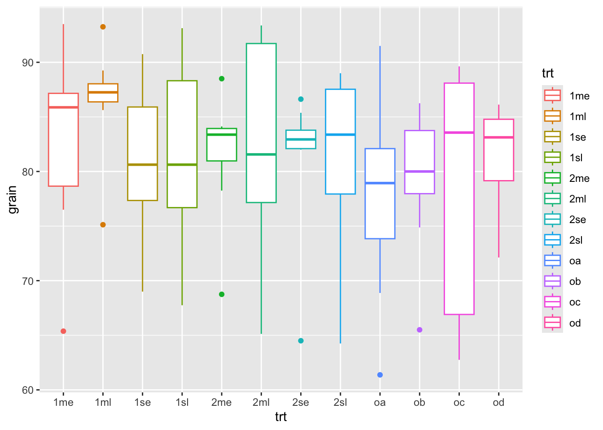
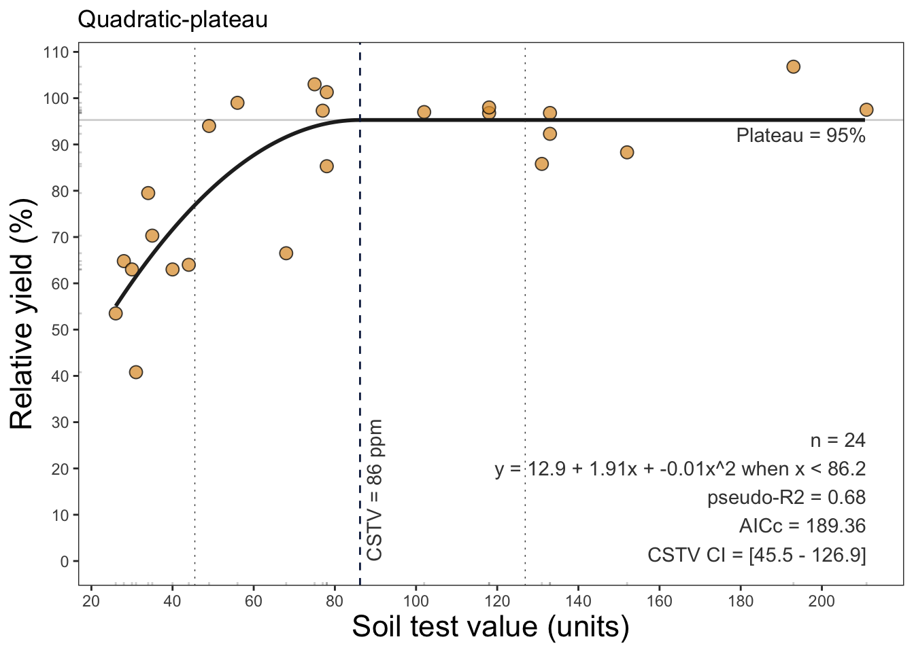

install.packages("dplyr")Fundamentals of R Packages
Introduction
i. What Are R Packages?
R packages are collections of functions, data, and documentation that extend the capabilities of R. They are designed to solve specific problems or add functionalities, such as data visualization, statistical modeling, or handling specific types of data.
Analogy: Think of R as a toolbox 🧰 and packages as individual tools 🔧 you can add to enhance its utility.
Important
Core Components:
Functions: Ready-made commands to perform tasks.
Data: Preloaded datasets for analysis or examples.
Documentation: Manuals explaining how to use the package.
ii. Why Are R Packages Important?
They extend functionality beyond base features.
Enable efficient workflows by using pre-written and optimized code.
Provide community-contributed solutions for a wide variety of domains (e.g., agriculture, bioinformatics, machine learning).
iii. Where to Find R Packages?
CRAN (Comprehensive R Archive Network): The primary repository for R packages. Well-maintained and includes thousands of packages.
Bioconductor: Specialized in bioinformatics and genomics.
GitHub: A platform where developers host and share experimental or in-development packages.
01. Managing packages
a. Installing packages
To install a package from CRAN, use:
To install a development version of a package from GitHub, use:
devtools::install_github("rstudio/ggplot2")Checking installed packages
installed.packages()b. Loading Packages
Once installed, load a package using:
library(dplyr)Or alternatively, you may use packages like pacman:
library(pacman)
pacman::p_load(dplyr, ggplot2)Or easypackages:
library(easypackages)
easypackages::libraries(dplyr, ggplot2)c. Updating packages
update.packages()d. Unload packages
detach("package:ggplot2", unload = TRUE)e. Uninstall packages
remove.packages("ggplot2")02. Documentation
To explore the functions within a package, access the help documentation:
help(package = "dplyr")
# or using the interrogation sign to get help
?dplyrYou can also view detailed tutorials or examples using vignetes:
vignette(package = "dplyr")
browseVignettes(package = "dplyr")03. Best Packages Practices
a. Start with the Right Packages:
Use foundational and well supported packages (e.g. tidyverse, data.table).
b. Stay Curious:
Explore new packages via CRAN Task Views (e.g., Agriculture Task View).
c. Version Control:
When becoming an advanced user, you could implement renv or packrat to manage package versions for reproducible analysis.
04. Examples
Let’s explore some practical applications of a few packages
a. agridat
The agridat package contains datasets related to agriculture, such as crop yields, experimental designs, and climate data. Let’s use an example from this package:
# Load the package
library(agridat)
# Load an example dataset
data(rothamsted.oats, package = 'agridat')
head(rothamsted.oats) block trt grain straw row col
1 x oa 61.375 83.0 12 1
2 x 2me 68.750 130.0 12 2
3 x 2sl 64.250 100.0 12 3
4 x ob 65.500 96.0 12 4
5 w 2sl 79.625 130.5 12 5
6 w oa 79.250 122.0 12 6# view(rothamsted.oats)b. ggplot2 for data visualization:
library(ggplot2)
ggplot(rothamsted.oats, aes(x = trt, y = grain)) +
geom_point(aes(color = trt))
ggplot(rothamsted.oats, aes(x = trt, y = grain)) +
geom_boxplot(aes(color = trt))
ggplot(data = rothamsted.oats,
aes(x = trt, y = grain, fill = trt)) +
geom_bar(stat = "identity")+
facet_wrap(~block)
c. dplyr for data manipulation:
library(dplyr)
# Basic dplyr operations
filter(.data = rothamsted.oats, straw > 150) block trt grain straw row col
1 w 1se 80.750 160.5 12 8
2 w 2me 88.500 159.0 11 5
3 w 1me 89.125 165.0 11 7
4 x 2se 83.000 161.0 10 4
5 w 1sl 93.125 191.0 10 6
6 w od 84.875 166.5 10 7
7 w 2se 86.625 185.0 10 8
8 z 2se 64.500 161.5 9 6
9 z 2sl 88.750 180.5 9 7
10 z 2ml 91.250 165.5 9 8
11 z oc 88.750 155.0 8 7
12 z 1sl 88.875 158.0 8 8
13 z 2me 84.125 170.0 7 5
14 z 1me 86.000 190.5 7 7
15 z 1se 80.500 158.5 7 8
16 k 2me 83.875 181.0 6 4
17 j 2se 82.875 196.5 6 6
18 j 2me 78.250 200.0 6 7
19 j 1ml 87.125 154.5 5 8
20 j 1se 76.875 165.5 4 7
21 l 2sl 87.125 153.0 3 4
22 m 1sl 80.750 154.5 3 8
23 m 2se 85.375 181.5 2 6
24 m 2ml 93.375 164.0 2 7
25 m oc 89.625 157.0 2 8
26 l 2se 82.125 175.5 1 3
27 m 2me 83.875 192.5 1 6
28 m 2sl 89.000 188.0 1 7
29 m 1ml 93.250 162.0 1 8# Get mean grain yield
summarize(.data = rothamsted.oats, mean_hp = mean(grain)) mean_hp
1 81.17448
Note
What if we’d like to run several commands in a row? There are three main options: 1. overwrite an object at each step, 2. create intermediate objects and pass them along, or… 3. use pipe operators to chain commands
d. Pipe operator ‘%>%’:
The ‘dplyr’ package heavily utilizes the pipe operator %>% from the ‘magrittr’ package to streamline data manipulation workflows. This operator allows you to pass the output of one function directly into the next function, making your code more readable and easier to follow.
# Group by treatment and summarize
# Using the pipe operator for chaining commands
rothamsted.oats %>%
group_by(trt) %>%
summarize(mean_grain = mean(grain))# A tibble: 12 × 2
trt mean_grain
<fct> <dbl>
1 1me 82.8
2 1ml 86.5
3 1se 81.1
4 1sl 80.8
5 2me 81.5
6 2ml 82.3
7 2se 81.2
8 2sl 81.2
9 oa 77.6
10 ob 79.2
11 oc 78.4
12 od 81.4# The best practice is to specify the data using the .data argument
rothamsted.oats %>%
group_by(trt) %>%
summarize(.data = ., mean_grain = mean(grain))# A tibble: 12 × 2
trt mean_grain
<fct> <dbl>
1 1me 82.8
2 1ml 86.5
3 1se 81.1
4 1sl 80.8
5 2me 81.5
6 2ml 82.3
7 2se 81.2
8 2sl 81.2
9 oa 77.6
10 ob 79.2
11 oc 78.4
12 od 81.4e. Native pipe operator ‘|>’:
With the introduction of R 4.1.0, base R now includes its own native pipe operator |>, which serves a similar purpose to the %>% operator from the ‘magrittr’ package. This operator allows you to pass the result of one expression as the first argument to the next expression, enhancing code readability without the need for additional packages.
# Using the native pipe operator
rothamsted.oats |>
group_by(trt) |>
summarize(.data = _, mean_grain = mean(grain))# A tibble: 12 × 2
trt mean_grain
<fct> <dbl>
1 1me 82.8
2 1ml 86.5
3 1se 81.1
4 1sl 80.8
5 2me 81.5
6 2ml 82.3
7 2se 81.2
8 2sl 81.2
9 oa 77.6
10 ob 79.2
11 oc 78.4
12 od 81.4
Warning
Notice when using the %>% the placeholder . is used to indicate where the piped value should be inserted if it’s not the first argument. Similarly, with the native pipe |>, the placeholder _ can be used to indicate where the piped value should be inserted if it’s not the first argument.
Does any work “better” than the other?
Where |> tends to be better
- No package needed (it’s base R syntax), so it works everywhere without loading magrittr.
- Usually less overhead than %>% because %>% is a function-based pipe, while |> is language syntax.
- In practice, the difference is rarely noticeable compared to the cost of dplyr verbs, but it can matter in tight loops.
- Plays nicely with modern R style and is increasingly common in new code.
Where %>% is more flexible
- Placeholder power: %>% uses . to place the LHS wherever you want. Base |> uses _ but it’s more restricted (notably, it’s tied to named arguments).
%>%can do extras like creating functions from a pipeline (and other magrittr variants like%T>%,%<>%, etc.). Base|>doesn’t include those.%>%lets you pipe into a bare function name (x %>% sqrt).- Base
|>generally requires a call: x |> sqrt()
f. agricolae
The agricolae package in R is a comprehensive toolset designed for statistical analysis and visualization of agricultural experiments. It is particularly useful for researchers and practitioners working in crop science, agronomy, and other fields of agricultural research.
It provides methods for designing experiments, analyzing experimental data, and visualizing results, particularly for data collected in agricultural and biological research.
Note
It supports:
Experimental Designs: Generate designs for field experiments like randomized complete block design (RCBD), Latin square, factorial experiments, and others.
Statistical Analysis: Analyze variance (ANOVA), perform post-hoc tests (e.g., LSD, Tukey HSD), and assess experimental data.
Visualization: Create plots for results, including mean comparisons, dendrograms, and histograms.
Agronomic Tools: Calculate indices like stability for crop yields or pest/disease control measures.
i. Data analysis
# Load agricolae package
library(agricolae)
# Simulate agricultural data
data <- data.frame(
treatment = rep(c("A", "B", "C"), each = 5),
yield = c(50, 55, 52, 51, 54, # Yields for Treatment A
60, 62, 59, 61, 63, # Yields for Treatment B
48, 46, 50, 49, 47) # Yields for Treatment C
)
# Display the dataset
print(data) treatment yield
1 A 50
2 A 55
3 A 52
4 A 51
5 A 54
6 B 60
7 B 62
8 B 59
9 B 61
10 B 63
11 C 48
12 C 46
13 C 50
14 C 49
15 C 47# Perform ANOVA
anova_result <- aov(yield ~ treatment, data = data)
summary(anova_result) Df Sum Sq Mean Sq F value Pr(>F)
treatment 2 437.2 218.6 70.52 2.32e-07 ***
Residuals 12 37.2 3.1
---
Signif. codes: 0 '***' 0.001 '**' 0.01 '*' 0.05 '.' 0.1 ' ' 1# Perform LSD test for pairwise comparison
lsd_result <- LSD.test(anova_result, "treatment", console = TRUE)
Study: anova_result ~ "treatment"
LSD t Test for yield
Mean Square Error: 3.1
treatment, means and individual ( 95 %) CI
yield std r se LCL UCL Min Max Q25 Q50 Q75
A 52.4 2.073644 5 0.7874008 50.6844 54.1156 50 55 51 52 54
B 61.0 1.581139 5 0.7874008 59.2844 62.7156 59 63 60 61 62
C 48.0 1.581139 5 0.7874008 46.2844 49.7156 46 50 47 48 49
Alpha: 0.05 ; DF Error: 12
Critical Value of t: 2.178813
least Significant Difference: 2.426223
Treatments with the same letter are not significantly different.
yield groups
B 61.0 a
A 52.4 b
C 48.0 c# Could also run Tukey HSD, & Duncan's Test
# Plot LSD results
plot(lsd_result, main = "LSD Test Results for Treatment Yields")
ii. Experimental Design
You can generate layouts for randomized complete block designs (RCBD), Latin squares, Graeco-Latin squares, factorial experiments, and split-plot designs
design <- design.rcbd(trt = c("A", "B", "C"), r = 3)
print(design)$parameters
$parameters$design
[1] "rcbd"
$parameters$trt
[1] "A" "B" "C"
$parameters$r
[1] 3
$parameters$serie
[1] 2
$parameters$seed
[1] 838442263
$parameters$kinds
[1] "Super-Duper"
$parameters[[7]]
[1] TRUE
$sketch
[,1] [,2] [,3]
[1,] "B" "C" "A"
[2,] "A" "B" "C"
[3,] "B" "C" "A"
$book
plots block c("A", "B", "C")
1 101 1 B
2 102 1 C
3 103 1 A
4 201 2 A
5 202 2 B
6 203 2 C
7 301 3 B
8 302 3 C
9 303 3 Ag. soiltestcorr
This package assists users on reproducible regression analysis of relationships between crop relative yield (ry) and soil test values (stv) under different approaches.
For example, we can fit a linear-plateu model the a dataset with:
library(soiltestcorr)
data_freitas <- soiltestcorr::freitas1966
plot_lp <- linear_plateau(data = data_freitas,
stv = STK, ry = RY, plot = TRUE)
plot_lp
plot_qp <- quadratic_plateau(data = data_freitas,
stv = STK, ry = RY, plot = TRUE)
plot_qp
# cate-nelson
plot_cn <- cate_nelson_1965(data = data_freitas,
stv = STK, ry = RY,
target = 90,
plot = TRUE)
plot_cn